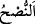

34. “Eğer Allah sizi azdırmak diliyorsa, ben size öğüt de vermek istesem,
öğüdüm size yarar sağlamaz. Rabb’iniz O’dur ve siz O’na döndürüleceksiniz.”
“Eğer Allah sizi azdırmak diliyorsa, ben size öğüt de vermek istesem, öğüdüm size
yarar sağlamaz.”__WORD__/öğüt, hayırla ilgili bütün söz ve davranışları içine alan kapsamlı bir kelimedir.
Özel hakîkî mânâsı ise hayır istemek ve hayra kılavuzluk etmektir. Nush’un zıddı, el-
ğış/aldatmaktır. Öğüdün kendisinden sakınılsın diye azgınlık mahallini, izinden gidilsin
diye de olgunluk mahallini bildirmek mânâsına geldiği de söylenmektedir.
Burada peygamberlerin öğüt ve dâvetlerinin Allah’ın azgınlık dilemesi durumunda
hidâyete vesile olamayacağına; hidâyetin de azgınlığın da Allah’ın elinde olduğuna
işaret vardır.
Hâfız der ki:
Mest olan bana hakaret gözüyle bakma
Çünkü günah da zühd de O’nun iradesi olmadan olmaz
Fakir (Bursevî) der ki: Nûh (a.s.)’ın, ileri gelenleri câhillikle vasfettiği daha önce
geçmişti. Cahillere ise ne öğüt kâr eder ne vaaz! Nitekim Mesnevî’de şöyle denilir:
Gaflet uykusuna dalmış bir bilgisize öğüt vermek,
Çorak bir yere tohum ekmektir!
Ahmaklığın, bilgisizliğin yırttığı şey, artık yama tutmaz!
Ey öğütçü, oraya hikmet tohumu pek ekme!
“Rabb’iniz” yaratıcınız, irâdesi uyarınca sizinle ilgili olarak tasarruflarda bulunan
“O’dur ve siz O’na döndürüleceksiniz.” de amellerinize göre size mutlaka karşılık
verilecek.
35. Yoksa: “O’nu uydurdu.” mu diyorlar? De ki: “Şayet onu uydurmuşsam suçum
banadır. Ama ben sizin işlediğiniz suçlardan uzağım.”
“Yoksa” Nûh kavmi: “onu” yani kendilerine tebliğ ettiği vahyi Nuh (a.s.) “uydurdu.”
mu diyorlar?” Ey Nûh! “De ki:” farz edin: “Şayet onu uydurmuşsam,” Bu söz Nûh
(a.s.)’ın şüphe ettiğini göstermez. Aksine kabul edilmesinden ümid kesildiği bir sırada
kötüleme maksadıyla söylenmiş bir sözdür. “Suçum” yani günahımın vebâli “banadır.”